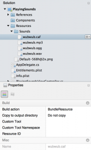

This is the third in a [glacially-paced] series of Abusing UIKit blog posts giving some background on the development that want into producing Smudges, a simple game written entirely in Xamarin.iOS where fun shapes in various colors show up on the screen wherever a tap is detected. It was original created to give my two-year-old something fun to play while going tap-crazy on the screen. The game evolved from those “play-testing” sessions. If you have your own little ones and want something fun to distract them, Smudges is availabe on the App Store. At this point, I plan to continue adding features to it as I can. Let me know what you think about Smudges, or these blog posts, in the comments below or find @patridgedev on Twitter.

Let There Be Noise!
Playing sounds in your apps can make for some great user interactions. Of course, it can also be used for far more annoying uses. For Smudges, each time an icon is placed on the screen with a tap, a random sound is played from a set of noises originally generated via as3sfxr (think Atari-era synth sounds).
As a disclaimer, this will only cover playing the random sound here and there. If you want timed, scheduled, or synchronized sounds, you will want to spend some time getting to know Audio Queue Services.
Getting Sounds Ready
Apple suggests different audio formats to meet different needs. Your project needs may vary, but if you aren’t doing crazy high-quality music tracks, there is a lot of flexibility.
You can play WAV, MP3, and CAF files. I wasn’t able to play OGG files directly, but there are lots of tools to convert between the various formats. I tend to use VLC to convert between various formats. At the risk of turning this into a tutorial about converting audio files, open VLC and go to File > “Convert / Stream…”.
- Select the source file
- Choose a profile to determine your output format
- Select “Save as File” and choose an output location

Sound, Meet Project. Project, Meet Sound
Whatever sounds and audio format you decide to use, add your sounds to the Resources folder in your iOS project. Feel free to use a subfolder to organize things however you prefer. Ultimately, you will end up with a file added to your project with a build action of “BundleResource”, ensuring it is set up for use at runtime.

With your sounds in place, it’s just a few lines of code until you can start sending vibrations to your users’ ears.
Playing the Sounds
For these simple UI-style sounds, I find it best to throw an AVAudioPlayer at the problem. You spin one up with an NSUrl pointing to the resource, and tell it to play when you need it.
using AVFoundation;
...
var fileUrl = new NSUrl(NSBundle.MainBundle.PathForResource("Sounds/wubwub", "caf"), false);
var player = AVAudioPlayer.FromUrl(fileUrl);
...
player.Play();
If you want to help ensure your sound plays back immediately when asked to do so, you can tell the player to get itself ready to go.
player.PrepareToPlay();
For example, you can build up your audio player and immediately call this method in your ViewDidLoad method. Then, when your sound plays later, say, in response to an event handler firing, it is theoretically ready to go. The Apple AVAudioPlayer docs on this method don’t go into detail too much, but presumably this consumes memory and audio hardware resources. You will want to weigh the trade-offs in your playback based on the size/format of your sounds and how frequently you need each one.
When You’re Done…
If you want to run some code after your sound plays, AVAudioPlayer.FinishedPlaying is the event you’ll need.
player.FinishedPlaying += doSomethingCoolAfterSoundPlays;
In the sample code, I just throw a rotation animation at the button that triggered the sound. In the sample code, I just inline an event handler that rotates the button that triggered the sound. If you have a bunch of audio players, though, you could easily tie them all together to a common handler to save on lines of code.
Best Practices?
I’m not one to shy away from acknowledging when I don’t know something, and this is one of those times. When it comes to the best practices for audio playback, I only know what has worked well for me so far. A lot of the detailed information you find about playing audio on iOS is in game engines rather than hitting the core APIs directly. There is probably some value in digging into how these engines do their dirty work, under the hood.
Until then, I’ve gotten by pretty well with simple audio playback using the above technique. Smudges allows for simultaneous taps from 10 fingers (on iPads, iPhones only allow 5). When a pair of kids goes tap-crazy on Smudges all they can, it seems to hold up quite well, if not a little muddled. I have all my players in a list, and just grab a random one to play; that’s how the sample code does it as well. Take that for what it’s worth. If you find a better/safer way to do things, please do share in a comment below.
One last shameless plug…
Find Smudges on the App Store, available for iPhone, iPad, or iPod Touch. It’s especially fun on iPad where the hardware allows for ten simultaneous touch points.